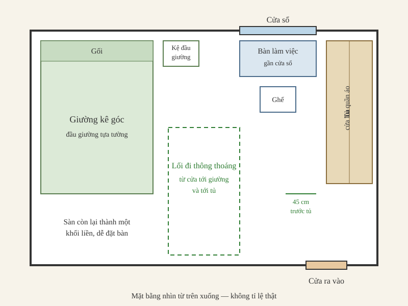

Bố trí phòng ngủ nhỏ: giường, tủ và bàn trong một phòng
Một phòng ngủ nhỏ thường phải làm ba việc cùng lúc: chỗ ngủ, chỗ cất quần áo và chỗ làm việc. Khó khăn không nằm ở việc thiếu đồ, mà ở chỗ ba việc này tranh nhau cùng một khoảng sàn.
Bài viết này chỉ nói về cách bố trí giường, tủ quần áo và bàn làm việc trong một phòng ngủ, không chia phòng thành hai khu. Bài không hướng dẫn chia phòng bằng rèm hay kệ mở, vì cách chia phòng đã có trong bài "Chia không gian phòng trọ nhỏ bằng rèm và kệ mở" — bạn xem Bài 12 khi cần tách phòng thành hai khu. Bài cũng không hướng dẫn chọn vị trí gương chi tiết, vì cách đặt gương đã có trong bài "Dùng gương để nới rộng cảm giác không gian phòng nhỏ" — bạn xem Bài 11 khi cần đặt gương. Bài này không có cây cảnh hay hoa tươi trong phòng.
Đo phòng và vẽ sơ đồ trước khi mua đồ
Việc đầu tiên không phải là chọn giường hay chọn tủ, mà là đo phòng. Bạn cần thước dây, một tờ giấy và một cây bút. Bạn đo chiều dài và chiều rộng của phòng, rồi đo thêm vị trí và chiều rộng của cửa ra vào, vị trí và chiều cao của cửa sổ, vị trí ổ điện và công tắc.
Sau khi đo xong, bạn vẽ sơ đồ phòng ra giấy theo đúng số đo, rồi vẽ thêm vòng quét của cánh cửa ra vào và cánh cửa tủ nếu tủ dùng cửa mở. Vòng quét của cửa là phần sàn mà cánh cửa đi qua khi mở ra, và không món đồ nào nên nằm trong vòng đó. Hướng dẫn của PatchDecor nhắc việc này trước tiên: vẽ vòng quét của mọi cánh cửa rồi mới đặt đồ đạc, vì một cánh cửa mở ra chạm vào chân giường sẽ lấy mất lối đi mỗi lần bạn ra vào phòng.
Khi sơ đồ đã xong, bạn dùng băng giấy dán lên sàn theo đúng kích thước thật của giường, tủ và bàn dự định mua, rồi đi lại trong phòng như bình thường trong một ngày: đi từ cửa tới giường, mở tủ, kéo ghế ra ngồi vào bàn. Cách thử này được gợi ý trong bài viết của Chợ Decor: dán băng giấy theo mép giường, mép tủ và vòng quét của cánh cửa, rồi đi thử; nếu phải nghiêng người mới lọt qua thì nên bỏ bớt một món đồ đứng sàn.
Thứ tự đặt đồ: giường trước, tủ sau, bàn cuối cùng
Giường là món lớn nhất và khó dời nhất, nên bạn đặt giường trước. Tủ quần áo là món lớn thứ hai, bạn đặt sau khi giường đã có chỗ và lối đi đã được giữ lại. Bàn làm việc là món bổ sung, bạn đặt cuối cùng, vào phần sàn còn lại sau khi giường và tủ đã ổn. Hướng dẫn của PatchDecor nêu rõ thứ tự đó: đặt giường trước vì nó là món lớn nhất và quyết định mọi vị trí còn lại, thêm tủ cất trữ sau khi giường và lối đi đã ổn, và để bàn làm việc hay ghế ngồi vào sau cùng.
Bài viết của Minimal Design cũng nói cùng ý: giường và tủ nên được xác định vị trí trước vì đây là hai món khó thay đổi nhất, rồi những món nhỏ như bàn mới được bổ sung dựa trên phần diện tích thực sự còn lại. Thứ tự đúng cũng giúp bạn biết mình có thật sự cần bàn làm việc trong phòng ngủ hay không. Minimal Design nhắc rằng một chiếc bàn chỉ đáng có khi thực sự được sử dụng, và một chiếc tủ lớn chỉ hợp lý khi lượng đồ cần cất tương xứng với diện tích nó chiếm.
Chọn vị trí cho giường
Giường chiếm nhiều diện tích nhất trong phòng, nên vị trí giường gần như quyết định cả căn phòng. Có ba cách đặt giường thường gặp. Cách thứ nhất là đặt giường giữa tường dài, đầu giường tựa vào tường dài nhất. Cách này cho hai bên giường đều có lối đi, hai người ngủ đều lên xuống được. Điểm yếu là nó cần phòng đủ rộng: hướng dẫn của Archtra nêu rõ, giường cỡ queen rộng khoảng 152 cm, cộng hai bên mỗi bên 76 cm thì phòng cần rộng khoảng 3 m mới đủ, và phòng hẹp dưới 2,7 m thì cách đặt này rất chật.
Cách thứ hai là kê giường vào góc, đầu giường tựa một tường và một cạnh dài áp sát tường còn lại. Cách này chỉ để lại một lối đi duy nhất, nhưng phần sàn còn lại thành một khối liền, dễ đi và dễ đặt bàn. Bài viết của Chợ Decor gợi ý: với phòng dưới 10 m², nên thử kê giường vào góc trước, vì sàn còn lại thành một khối liền, dễ đi và dễ đặt bàn.
Cách thứ ba là đặt giường dưới cửa sổ, đầu giường tựa vào tường có cửa sổ. Cách này trả lại cả một bức tường dài cho tủ quần áo hoặc bàn làm việc. Hướng dẫn của Archtra cho rằng đặt giường dưới cửa sổ vẫn ổn, miễn là bạn chừa khe hở cho rèm cửa, dùng đầu giường thấp, và tránh đặt đầu giường ngay dưới cửa sổ đón nắng chiều gay gắt. Dù chọn cách nào, bạn cũng nên tránh đặt giường chắn ngay trước cửa ra vào, và tránh để đầu giường che mất ổ điện hay công tắc đèn. Một chi tiết đáng nhớ trong bài viết của Chợ Decor: ở miền Bắc vào mùa nồm, tường có thể đọng nước, nên đầu giường áp sát tường sẽ ẩm theo; nguồn tư vấn được bài đó dẫn khuyên chừa 5 đến 10 cm giữa đầu giường và tường, và 10 đến 15 cm nếu giường có hộc hoặc kệ phía sau.
Giữ lối đi: phần sàn không được lấn
Lối đi là phần sàn bạn đi qua mỗi ngày. Các con số dưới đây là mốc tham khảo, không phải tiêu chuẩn xây dựng bắt buộc.
| Khoảng trống | Mốc tham khảo |
|---|---|
| Lối đi bên giường, phía bạn hay lên xuống | Khoảng 60–76 cm |
| Lối đi bên giường còn lại | Khoảng 40–50 cm |
| Khoảng trống ở chân giường | Khoảng 76–91 cm |
| Trước tủ cửa mở | Khoảng 91 cm |
| Trước tủ cửa lùa | Khoảng 45 cm |
| Lối đi chính từ cửa tới giường | Khoảng 60–90 cm |
Mốc 60 đến 76 cm cho lối đi bên giường lấy từ hướng dẫn của Archtra, trong đó mức 60 cm là mức tối thiểu còn dùng được và mức 76 cm là mức thoải mái hơn. Bài viết của Chợ Decor đưa ra mốc gần giống: chừa ít nhất 60 cm ở bên bạn hay đi, bên còn lại để 40 đến 50 cm là đủ để thay ga, và đừng chia đều lối đi hai bên khi phòng không đủ rộng. Cách kiểm tra tốt nhất vẫn là đi thử bằng chính cơ thể bạn vào buổi tối: đi từ cửa tới giường trong bóng tối, mở tủ lấy một món đồ, rồi đi từ giường ra cửa. Nếu bạn phải nghiêng người hay đưa tay ra dò đường vì sợ vấp, thì lối đi đó chưa đủ rộng, dù trên sơ đồ giấy nó trông vẫn ổn.
Đặt tủ quần áo: gom về một tường, chọn cửa hợp với lối đi
Tủ quần áo là khối đồ lớn thứ hai trong phòng. Bài viết của Minimal Design nhắc rằng tủ quần áo thường là khối nội thất có ảnh hưởng lớn nhất tới cảm giác rộng hay chật của phòng ngủ, sau giường. Vì vậy bạn nên gom tủ về một bức tường dài và để tủ đứng gọn ở đó, thay vì chia tủ thành nhiều tủ nhỏ đặt rải rác quanh phòng. Vị trí hợp nhất cho tủ thường là bức tường đối diện giường, hoặc bức tường dài còn trống sau khi giường đã có chỗ. Bạn nên tránh đặt tủ che mất cửa sổ, vì cửa sổ bị che là cả phòng tối và bí.
Loại cửa tủ quyết định tủ lấy mất bao nhiêu sàn. Tủ cửa mở cần khoảng 91 cm sàn trống phía trước để cánh tủ mở hết, theo hướng dẫn của Archtra; trong phòng nhỏ, khoảng trống đó có thể chiếm tới một phần ba diện tích sàn. Tủ cửa lùa chỉ cần khoảng 45 cm phía trước, vì cánh cửa trượt sang bên chứ không quét ra ngoài, nên cửa lùa hợp với phòng nhỏ hơn nhiều. Chiều sâu tủ thường là 50 đến 60 cm, trong đó 56 cm là chiều sâu lý tưởng theo hướng dẫn của Archtra. Bên trong tủ, bạn nên xếp đồ theo tần suất dùng: đồ mặc hằng ngày ở tầm tay, đồ ít dùng lên ngăn cao, đồ theo mùa lên ngăn cao nhất hoặc xuống gầm giường.
Đặt bàn làm việc trong phòng ngủ
Bàn làm việc trong phòng ngủ là món khó đặt nhất trong ba món, vì nó cần ánh sáng, cần ổ điện và cần chỗ kéo ghế. Vị trí hợp nhất cho bàn thường là gần cửa sổ, để bạn làm việc bằng ánh sáng ban ngày. Hướng dẫn của PatchDecor gợi ý đặt bàn cạnh cửa sổ hoặc dưới cửa sổ, đặt bàn tựa vào tường đối diện giường, và tránh đặt bàn chắn vòng quét của cánh tủ hay chắn lối đi chính.
Cách đặt bàn cho khỏi giật mình khi có người đi vào, cách chọn ghế và cách bố trí ánh sáng cho góc làm việc đã có trong bài "Trang trí góc làm việc tại nhà nhỏ gọn mà đẹp" — bạn xem Bài 3 khi cần đặt bàn đúng hướng, chọn ghế vừa người và đặt đèn bàn đúng phía tay thuận. Cách giấu dây cáp trên bàn đã có trong bài về sắp xếp dây cáp trên bàn — bạn xem Bài 10 khi dây điện trên bàn bắt đầu rối. Hướng dẫn của Archtra gợi ý chọn bàn treo tường gấp gọn và chừa khoảng 61 cm chỗ ngồi cho ghế; hướng dẫn của PatchDecor đưa mốc cho khoảng trống sau ghế là 76 cm ở mức thoải mái và 61 cm ở mức tối thiểu còn kéo ghế ra được.
Cất trữ theo chiều dọc: lên tường và xuống gầm giường
Khi sàn đã hết chỗ, cách cất trữ còn lại là đi lên tường và xuống gầm giường: tủ quần áo cao tới gần trần và kệ nông phía trên bàn làm việc. Bài viết của Chợ Decor đưa ra một con số cụ thể cho kệ treo tường: một kệ nông, sâu 20 đến 25 cm, giữ được sách và đồ nhỏ mà không lấn vào lối đi. Tủ cao tới trần cần được cố định chắc chắn vào tường: bài viết của Chợ Decor nêu rõ, tủ cao sát trần dùng chiều đứng, nhưng phải bắt vít cố định vào tường. Bạn nên nhờ người có kinh nghiệm làm giúp bước này, và nếu ở nhà thuê thì hỏi chủ nhà trước khi bắt vít.
Bài viết của Chợ Decor dẫn gợi ý của IKEA: dùng gầm giường cho đồ ít lấy và dùng hộp có nắp để phòng gọn mắt, đồ theo mùa như chăn bông, áo ấm và vali xếp vào đây, còn đồ dùng hằng ngày giữ ở tầm tay. Cách rẻ nhất là mua hộp nhựa hoặc hộp vải thấp hơn khoảng hở dưới gầm giường vài cm, có bánh xe nếu sàn nhà nhẵn.
Ánh sáng trong phòng ngủ nhỏ
Ban ngày, bạn nên giữ cửa sổ không bị tủ cao hay đầu giường cao che mất. Bài viết của Minimal Design nhắc: một cửa sổ có nguồn sáng tốt nên được giữ thông thoáng thay vì bị che bởi tủ hoặc quá nhiều đồ. Buổi tối, bạn nên dùng ba lớp ánh sáng thay vì một lớp, theo hướng dẫn của Archtra: ánh sáng chung dịu nhẹ từ đèn trần, ánh sáng đọc sách ở đầu giường, và một ánh sáng nhẹ cho ban đêm. Hướng dẫn này đưa ra hai mốc tham khảo: bóng đèn ấm khoảng 2700 đến 3000K hợp với phòng ngủ, và ánh sáng chung khoảng 100 đến 300 lux là đủ cho phòng ngủ. Hai mốc này chỉ là ước chừng của nguồn hướng dẫn, chưa đo thực tế trong phòng của bạn, nên bạn nên thử bằng mắt mình: ánh sáng đủ là khi bạn đọc sách được mà không phải nheo mắt.
Ba bố cục mẫu để bạn thử
| Bố cục | Giường | Tủ | Bàn | Hợp với phòng nào |
|---|---|---|---|---|
| Giường giữa tường dài | Giữa tường dài, hai lối đi hai bên | Tường đối diện giường | Gần cửa sổ | Phòng rộng khoảng 3 m trở lên, hai người ngủ |
| Giường kê góc | Vào góc, một lối đi duy nhất | Tường dài còn trống | Gần cửa sổ | Phòng dưới 10 m², một người ngủ |
| Giường dưới cửa sổ | Dưới cửa sổ, đầu giường thấp | Tường dài nhất còn trống | Tường đối diện giường | Phòng hẹp, mọi tường khác đều có cửa hoặc tủ |
Những lỗi hay gặp khi bố trí phòng ngủ nhỏ
Lỗi đầu tiên là mua giường quá lớn so với phòng. Bài viết của Minimal Design nhắc: thay vì chỉ nhìn xem chiếc giường có đặt vừa hay không, nên thử hình dung cả việc mở cửa tủ và di chuyển hai bên giường. Lỗi thứ hai là làm quá nhiều tủ vì sợ thiếu chỗ chứa: nếu không xác định lượng đồ cần cất ngay từ đầu, bạn rất dễ tạo ra một căn phòng có nhiều không gian lưu trữ nhưng lại thiếu khoảng trống để sống. Lỗi thứ ba là cố đưa quá nhiều công năng vào một phòng: nếu mỗi nhu cầu đều được dành một món nội thất riêng, căn phòng rất nhanh trở thành nơi chứa công năng hơn là nơi nghỉ ngơi. Lỗi thứ tư là mua từng món nội thất mà không nhìn tổng thể: mỗi món đồ nên được nhìn như một phần của tổng thể trước khi quyết định.
Kết luận
Bố trí phòng ngủ nhỏ bắt đầu từ việc đo phòng, vẽ sơ đồ, đặt giường trước, giữ lối đi trước, rồi mới tính tới tủ quần áo và bàn làm việc. Bốn việc cần nhớ là: đặt giường ở tường dài nhất còn trống hoặc ở góc khi phòng quá nhỏ, gom tủ quần áo về một tường và chọn cửa lùa khi lối đi hẹp, đặt bàn làm việc gần cửa sổ và chừa đủ chỗ kéo ghế, và cất đồ theo chiều dọc lên tủ cao và xuống gầm giường.
Nguồn tham khảo
- Minimal Design, "Thiết kế nội thất phòng ngủ nhỏ: Cách bố trí để phòng thoáng và dễ sống" — dùng cho các khẳng định: giường và tủ nên xác định vị trí trước vì là hai món khó thay đổi nhất, bàn bổ sung sau theo diện tích còn lại; một chiếc bàn chỉ đáng có khi thực sự được sử dụng; tủ quần áo là khối ảnh hưởng lớn nhất tới cảm giác rộng hay chật sau giường, nên gom tủ về một phía và tận dụng chiều cao; cửa sổ có nguồn sáng tốt nên giữ thông thoáng thay vì bị che bởi tủ; các lỗi hay gặp gồm chọn giường quá lớn, làm quá nhiều tủ, cố đưa quá nhiều công năng, mua từng món mà không nhìn tổng thể (truy cập 23/11/2026): https://minimaldesign.vn/thiet-ke-noi-that-phong-ngu-nho/
- Archtra, "Small Bedroom Design Ideas: Layouts, Colours & Storage" — dùng cho các khẳng định: lối đi bên giường 60–76 cm, khoảng trống chân giường 76–91 cm, trước tủ cửa mở khoảng 91 cm, trước tủ cửa lùa khoảng 45 cm, chiều sâu tủ 50–60 cm; giường queen rộng khoảng 152 cm cộng hai lối đi cần phòng rộng khoảng 3 m; giường dưới cửa sổ vẫn ổn nếu chừa khe cho rèm và dùng đầu giường thấp; bàn làm việc nên chọn bàn treo tường gấp gọn, chừa khoảng 61 cm chỗ ngồi; cất trữ lên cao, xuống gầm giường và phía sau đồ đạc, tủ cao tới trần cho thêm ngăn cất vali và đồ theo mùa; ánh sáng ba lớp gồm đèn trần, đèn đọc sách và đèn đêm, bóng đèn ấm khoảng 2700–3000K, ánh sáng chung khoảng 100–300 lux (truy cập 23/11/2026): https://archtra.com/small-bedroom-design-ideas/
- Chợ Decor, "Bố trí phòng ngủ nhỏ: lối đi, chỗ cất đồ và gương" (đăng 10/11/2026) — dùng cho các khẳng định: đặt giường trước, chừa lối đi ít nhất 60 cm ở bên hay đi rồi mới tính tủ và bàn; đừng chia đều lối đi hai bên, bên còn lại để 40–50 cm là đủ để thay ga; dán băng giấy theo mép giường, mép tủ và vòng quét cánh cửa rồi đi thử; phòng dưới 10 m² nên thử kê giường vào góc trước; chừa 5–10 cm giữa đầu giường và tường, 10–15 cm nếu giường có hộc hoặc kệ; dùng gầm giường cho đồ ít lấy với hộp có nắp, đồ theo mùa xếp vào gầm giường; kệ nông sâu 20–25 cm giữ sách và đồ nhỏ mà không lấn lối đi; tủ cao sát trần phải bắt vít cố định vào tường (truy cập 23/11/2026): https://chodecor.com/bai/bo-tri-phong-ngu-nho-gon.html
- PatchDecor, "Small Bedroom Layouts That Flow" — dùng cho các khẳng định: thứ tự đặt đồ là đo phòng, xác định lối đi, đặt giường trước, thêm tủ sau, để bàn làm việc vào sau cùng; lối đi chính tối thiểu 61 cm, thoải mái 91 cm, khoảng trống sau ghế tối thiểu 61 cm; giường kê góc tiết kiệm sàn nhất nhưng chỉ một phía lên xuống được; bàn làm việc nên đặt cạnh hoặc dưới cửa sổ, tựa tường đối diện giường, tránh vòng quét cánh tủ và lối đi chính; vẽ vòng quét của mọi cánh cửa trước khi đặt đồ đạc (truy cập 23/11/2026): https://patchdecor.com/design-ideas/small-bedroom-layout
Phương án ảnh

Đây là sơ đồ minh họa, không phải ảnh chụp thực hành